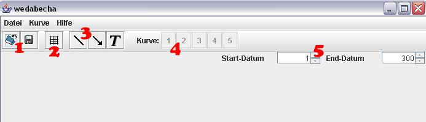
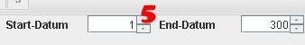
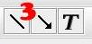
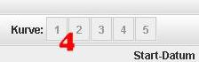

Hilfe u. Dokumentation für WeDaBeCha
Werkzeug zur grafischen Darstellung und Beschriftung von Charts

die WeDaBeCha Programmoberfläche
1. Erklärung der einzelnen Menüpunkte und der Toolbar
| Datei --> Öffnen Datei --> Tabelle importieren Datei --> Tabelle exportieren Datei --> Grafik exportieren Datei --> Programm beenden Kurve --> Kurve 1..5 --> Darstellung Kurve --> Kurve 1..5 --> Neu Zeichnen Hilfe --> Kurzanleitung Hilfe --> Dokumentation Hilfe --> über |
öffnet eine .weda-Datei zur Weiterverarbeitung eine oder mehrere Tabellen öffnen exportiert die eingelesenen und/oder verknüpften Tabellen in eine .csv-Datei exportiert den angezeigten Chart in eine .jpg-Datei beendet WeDaBeCha stellt die Darstellung der Kurve um zeichnet die Funktion nach erfolgten Änderungen bei "Darstellung" neu blendet eine Kurzanleitung ein zeigt diese Dokumentation an zeigt kurze Informationen über das Programm an |
Die Toolbar:
Auf der Toolbar befinden sich die Symbole für "Öffnen" (.weda-Datei öffnen) und "Speichern" (exportiert eine gewählte Tabelle) [1] und die Schaltfläche zum Anzeigen des Rasters [2] sowie die drei Symbole für das Zeichnen von Annotationen [3] und fünf Schaltflächen, je eine für jede Kurve, die die entsprechende Kurve ein- bzw. ausblenden [4].
Navigieren in der Kurve:
Mit den Reglern unter [5] kann in der Kurve navigiert werden. Es werden jeweils 300 Werte angezeigt, durch die gescrollt werden kann.

2. Tabellen importieren
Mit einem Klick auf "Tabelle importieren" im Menü Datei werden die Daten für die graphische Auswertung in Wedabecha geladen. Zuerst klicken sie dazu in der ersten Zeile auf "Öffnen". Im Dateiauswahldialog, den sie durch einen Klick auf "Durchsuchen" aufrufen, geben sie ihre erste Datendatei an. Ein Klick auf Öffnen und nun müssen nach einem weiteren Klick (auf "Datum") das Datumsformat und als letztes noch das Trennzeichen angegeben werden.
Nun gibt es zwei Möglichkeiten fortzufahren:
Mit einem Klick auf OK ist die Vorbereitung für den Import der ersten Tabelle abgeschlossen.
Sie können aber auch die Darstellungsart der Funktion ändern, indem sie auf "Darstellung" klicken. Hier können Kurvenstil und Farbe ausgewählt werden. Dies kann auch nachträglich noch geändert werden. Mit einem Klick auf OK geht es zurück in den vorherigen Auswahlbildschirm.
Sie können jetzt noch bis zu vier weitere
Tabellen importieren, indem sie die Zeilen 2 bis 5 nach der gleichen
Verfahrensweise "ausfüllen". Die Option "Speichern" hinter der jeweiligen Zeile
speichert auf Wunsch die Tabelle als .weda-Datei (einheitliches Format für
Tabellen). Beim nächsten Mal müssen dann nicht Datumsformat und Trennzeichen
angegeben werden.
Ein Klick auf OK übergibt dem Programm die Tabelle(n).
3. Tabellen exportieren
Mit einem Klick auf diesen Menüpunkt speichert das Programm die von ihnen gewünschten Tabellendaten in das .csv- oder das .weda-Format zur weiteren Bearbeitung z.B. in Excel. Einfach im Dateiauswahldialog einen Namen vergeben (gewünschte Endung bitte nicht vergessen !). Fertig.
4. Zeichnen von Linien und Pfeilen, Annotation
Ein Klick auf das Icon "Linie" oder "Pfeil" ruft den Editor-Modus auf. Nun ein Linksklick auf den Anfangspunkt und einen auf den Endpunkt. Mit dem Text funktioniert es genauso (nur ohne Endpunkt).

5. Grafik exportieren
Mit einem Klick auf "Grafik exportieren" im Datei-Menü wird die aktuelle Arbeitsfläche inklusive aller Pfeile, Linien, Annotationen, des Gitters und natürlich den Aktienkurven in eine gewählte JPEG-Datei gespeichert, die mit jedem üblichen Grafikbearbeitungsprogramm weiterverarbeitet werden kann.
6. Kurve öffnen
Mit dem Menüpunkt "Öffnen" im Dateimenü können sie eine Kurve importieren, ohne explizit Datumsformat und Trennzeichen angeben zu müssen. Dazu muss man nur die Kurvennummer angeben, unter der die Kurve später angezeigt werden soll und im Dateiauswahldialog die gewünschte .weda-Datei öffnen.
! Bevor die Kurve angezeigt wird, muss erst noch der entsprechende Button unter [4] in der Toolbar gedrückt werden.
